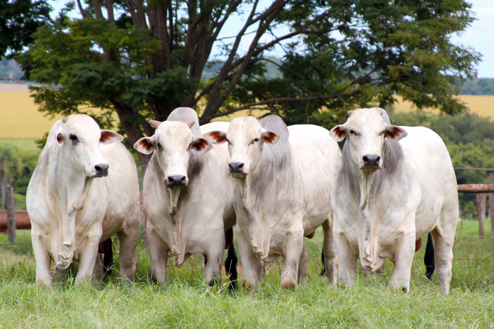
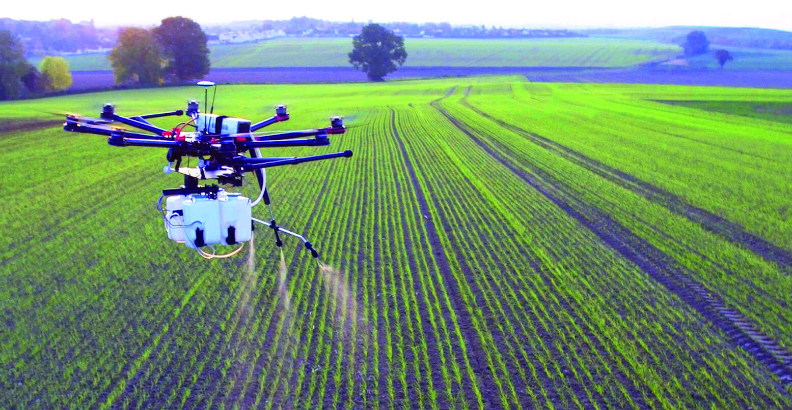
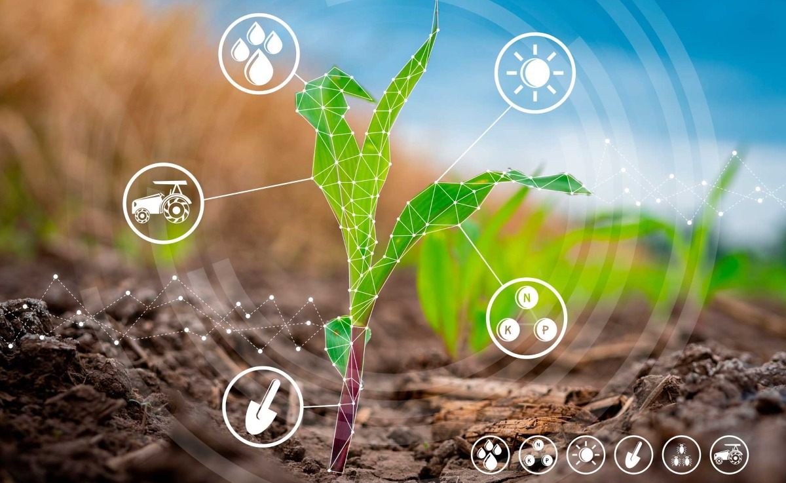
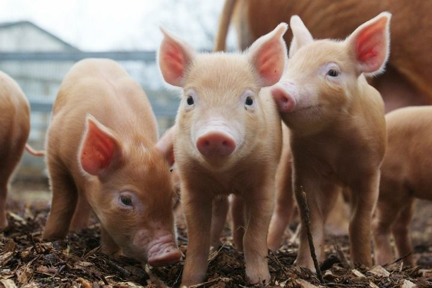
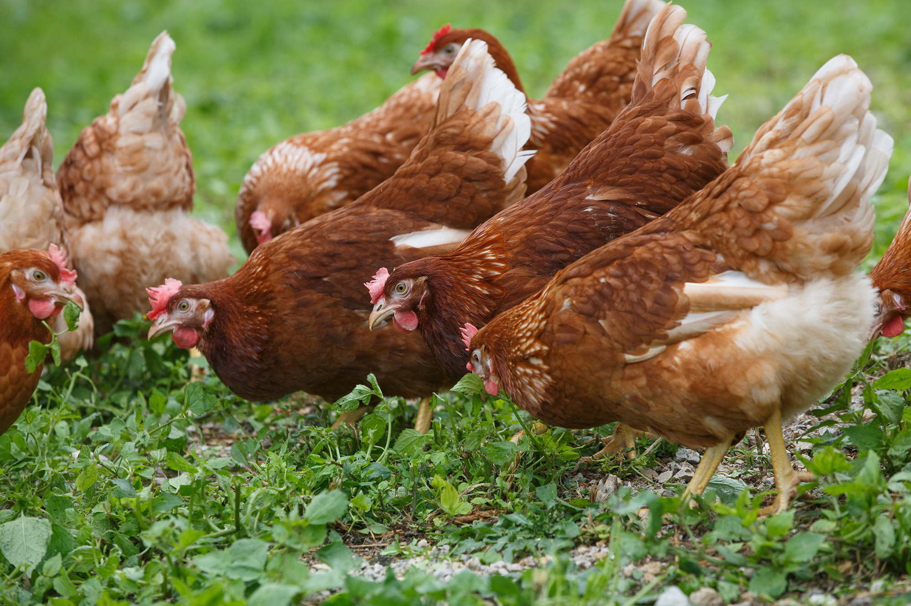
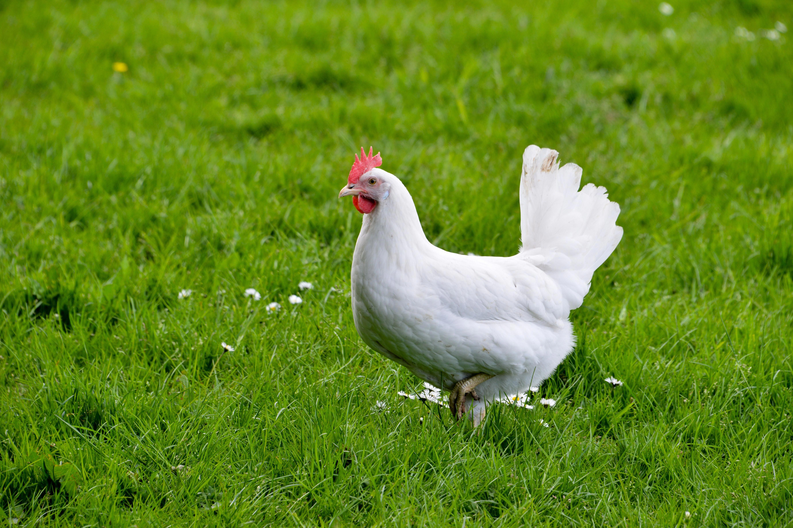
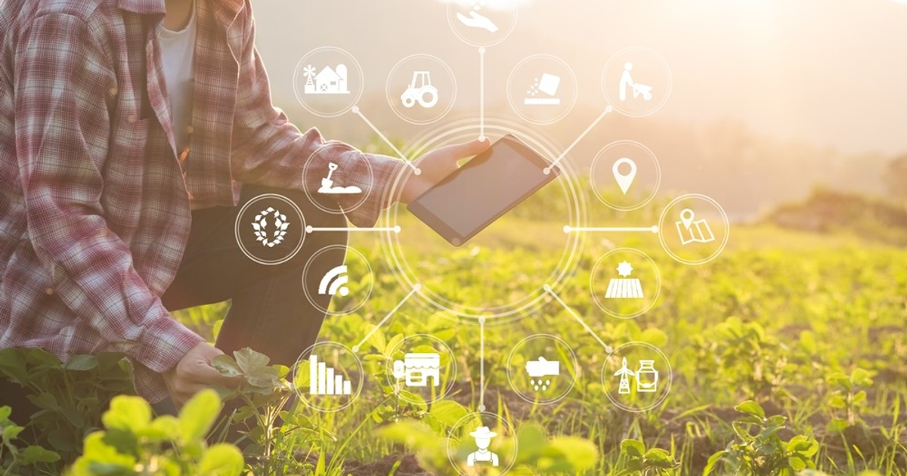
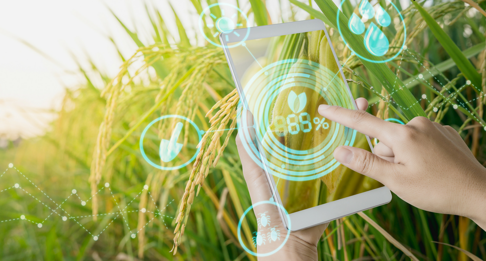

Notícias sobre bovinos
Em Alta

ARROBA DO BOI SOBEArroba do boi sobe em 25%, consequência de doenças que veem surgindo a partir dos maus tratos ao animal |

DRONE SINÔNIMO DE LUCROQue o drone ajuda você já sabe, então venha conferir como ele veem gerando lucro aos seus usuários |

INOVAÇÕES CHEGANDOEmpresa desenvolve novo sistema de operação em tratores da marca |
Notícias
-
Em alta, setor de suínos conta com alta tecnologia para crescer
Brasil tem previsão de crescimento na produção e exportação de
carne suína em 2024 e se destaca pela crescente eficiência
produtiva com ajuda dos aditivos tecnológicos
-

Suinocultura já dispõe de tecnologias para produzir rações menos
poluentes
-

Show com foco em novas tecnologias, evento especializado em
avicultura retorna à EuroTier 2024
-

Granja de ovos aposta em tecnologia, bem-estar das aves e
criação orgânica As granjas de galinhas vêm evoluindo a cada
dia. A preocupação com o bem-estar do animal e o uso de recursos
tecnológicos cresce cada vez mais.

-

Digitalização na agricultura: tecnologia revoluciona trabalho no
campo Produtores brasileiros se mostram cada vez mais receptivos
a novas tecnologias, já que o uso delas na agricultura
possibilita a automatização de processos e a análise de dados em
larga escala na produção
-

Tecnologia avança no campo e trabalhadores se adaptam à nova
fazenda digital e mecanizada Formação profissional para o agro
se amplia para preparar os profissionais que precisam lidar cada
vez mais com máquinas e softwares